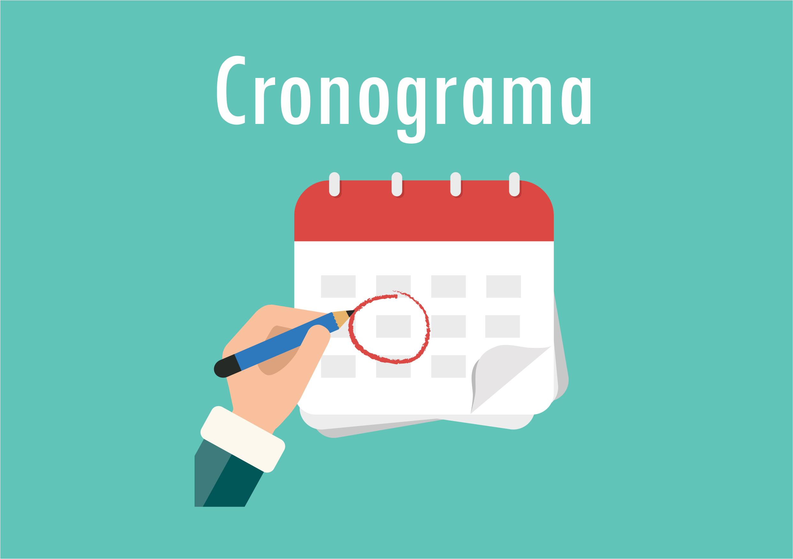
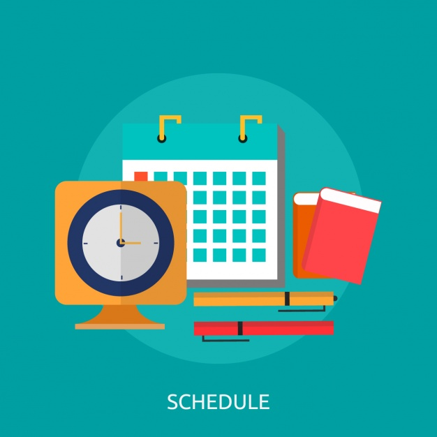
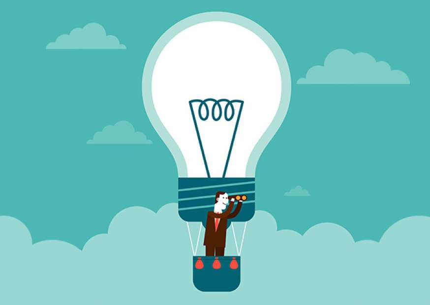

°Para entender de fato o que é gestão do tempo, podemos apresentar uma definição simples: é a gestão de tarefas que tornam os esforços de cada pessoa cada vez mais eficazes, com a ideia central de fazer o melhor trabalho em menos tempo.
A gestão do tempo não tem um conceito difícil de entender, mas pode se mostrar bem mais difícil de fazer na prática.
Ela requer que cada um invista seus esforços para priorizar e se organizar. Mas, uma vez iniciada, você descobrirá que com pequenos ajustes o seu dia passa a ser mais organizado, otimizando o tempo para tudo o que precisa fazer.
-Como aumentar a produtividade?
°Redes sociais: Muito cuidado ao misturar vida pessoal com profissional. Quando estiver em casa, nos seus momentos de lazer, até mesmo utilizando as redes,
evite pensar em assuntos de trabalho. Agora quando o assunto é execução de tarefas profissionais, tente ignorar ao máximo a perda de foco.
Cada momento que sua atenção é desviada, demanda um outro período até que você se localize onde parou.



Todos os direitos reservados ao blog More Productivity 2019 ®